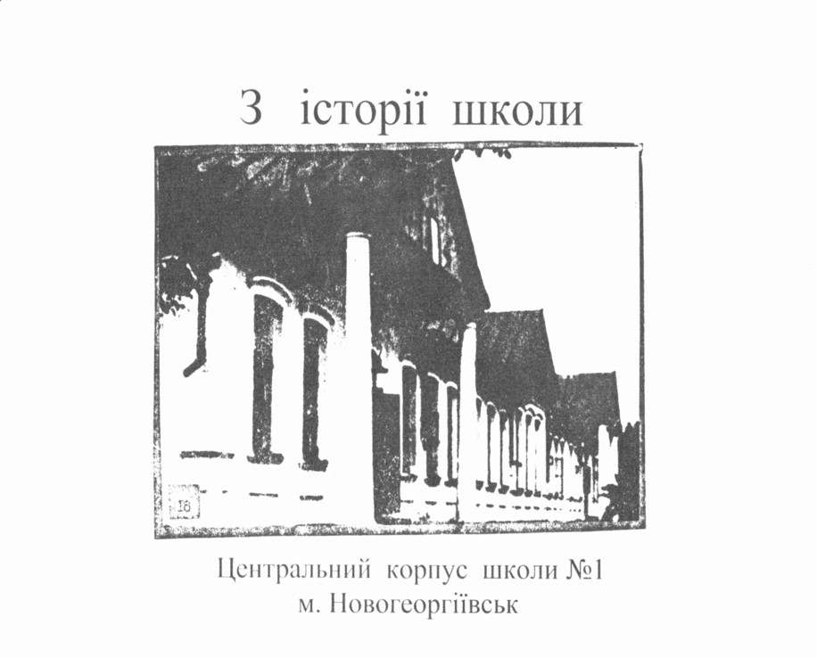
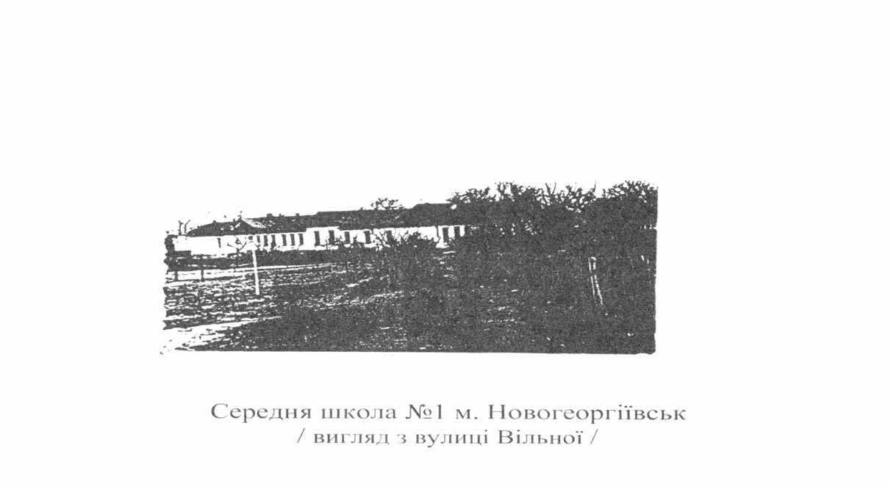

м. Світловодськ, Кіровоградська область
Сучасна школа (нині КЗ "Ліцей №4 "Обрій") є безпосередньою спадкоємицею середньої школи №1 м. Новогеоргіївськ. Під час будівництва Кременчуцької ГЕС більша частина давнього міста Новогеоргіївська опинилася в зоні затоплення штучного моря. Вчительський колектив та школярі перейшли до новозбудованого затишного приміщення на території села Таборище, де поставало нове місто — Світловодськ.
У 1959–1960 н. р. вперше продзвенів першовересневий дзвінок у новій школі. Радісно зустрічав перших учнів дружній учительський колектив на чолі з першим директором Душкою Степаном Івановичем.
З перших днів за вирувало насичене шкільне життя: працювали кабінети біології, піонерська кімната під керівництвом Посунько Моті Сидорівни, проводилася активна краєзнавча робота під керівництвом учителя історії та географії Глушич Єфросинії Кузьмівни. Учні разом із педагогами заклали шкільний сад та займалися озелененням міста.


Школа на 880 учнівських місць в 107 кварталі Нового міста в Кремгесі 1959 рік
Затверджено рішенням Ново-Георгіївської районної Ради депутатів трудящих від 24 вересня 1959 року
Державна комісія в складі:
голови комісії – представника Державної інспекції архітектурно-будівельного контролю т. Куценко Семен Петрович,
членів комісії: забудовник – ст. інженер т. Завгородній І. Т.,
держсанінспекція – т. Кравченко Н. і., Хавроненко М. П.,
держпожнагляд – т. Демченко О. Т….
в присутності директора школи Душка І. С., зав. райвно Пономаренко М. М., представника міськради Машукова оглянула школу на 880 учнівських місць, побудовану за проектом автора Ведерникова В. А. від 09.02. 1956р….
Комісія постановила:
Будівництво розпочате у вересні 1957 року.
Споруда має одну секцію, загальний об’єм - 17181 куб. м, корисна площа - 2940 кв. м, жилплощу - 38,6м, квартир – 2, кошторисна вартість - 3170,47 т. р., фактична вартість – 2806239 руб. 52 коп….
Вважати прийнятою школу з загальною оцінкою – “добре”.